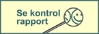
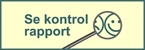

WestEnd BrygCentral
WestEnd BrygCentral er et mikrobryggeri, som er etableret af Kasper Berthelsen og Patrick Ejlerskov i 2015.
Følg os på Facebook
WestEnd BrygCentral er et mikrobryggeri, som er etableret af Kasper Berthelsen og Patrick Ejlerskov i 2015.
Følg os på Facebook
